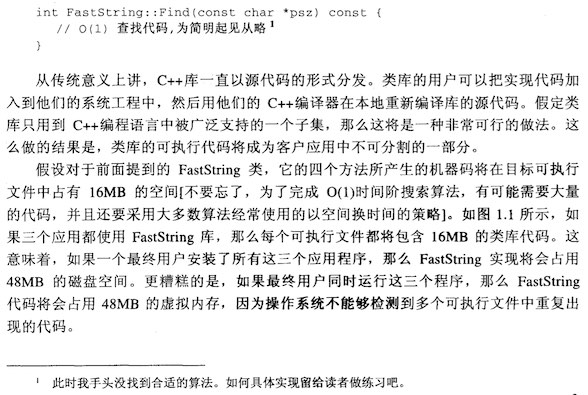
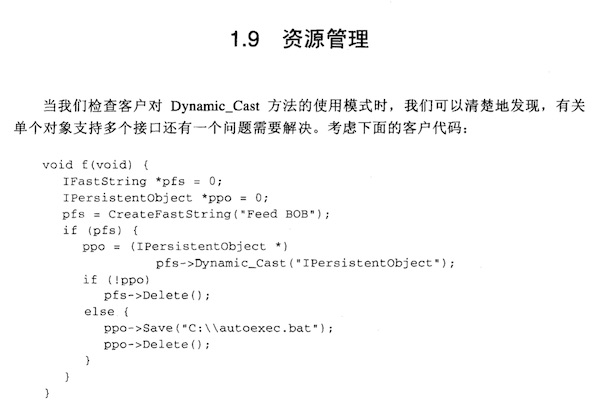

Don Box教你学COM
Posted on August 14, 2015
Tags: Code
最近在读《COM本质论》（对，就是这么怀旧），这本书现在的上架建议估计已经是“计算机考古学”类别了。作者Don Box是微软技术领域的传奇人物，序言里提到他有一个“喜欢COM更甚于其他对象模型”的年幼（指本书出版的时候）儿子，和一辆牌号为“IUNKNWN”的车。他的名字甚至预言了.Net中的值类型（Don’t Box!）。
读了两章我才发现这个这个姓“装箱”，名“导师”的家伙真是“毁人不倦”啊，证据如下，供各位计算机史学家参考：
坑读者系列之一

这个 O(1) 的子串查找算法是怎么回事？一点技术细节：为达到 O(1) 复杂度必须把 O(n^2) 个子串都放入哈希表，然而对用户输入求哈希本身就需要 O(n)。好一个“证明留给读者”，难道感兴趣的读者还要自备量子计算机不成？
坑读者系列之二

好奇当年有没有爱学习的小读者真的敲了这段代码并且成功运行的？
在调戏读者之外，Don Box还通过在每章开头的题辞处贴一段奇怪代码的方式，嘲笑了出版界同行在此处引用名人名言的装逼传统。
综上所述，读“装箱导师”的书请记得一定要think out of the Box，千万不要像Don Quixote那样自不量力挑战书中那些不可能的任务！